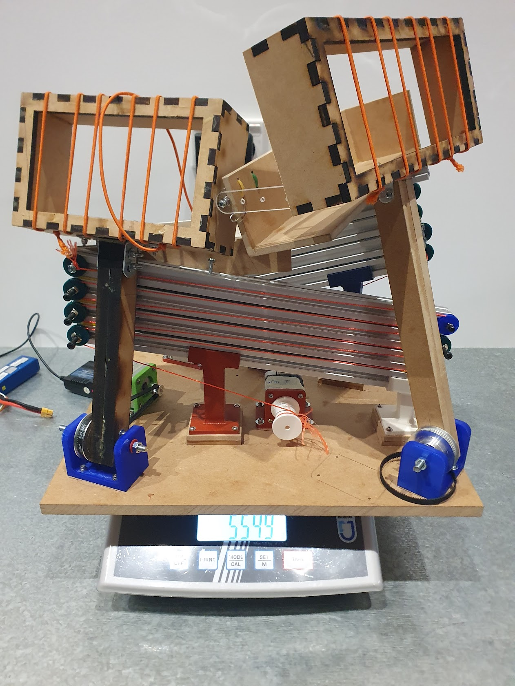
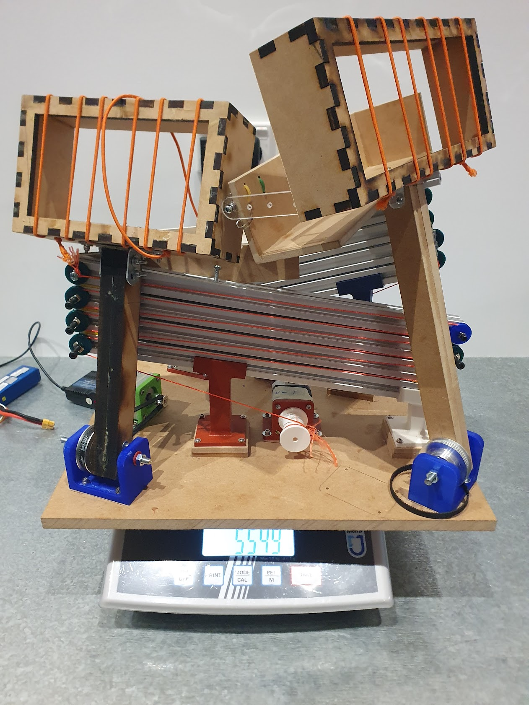
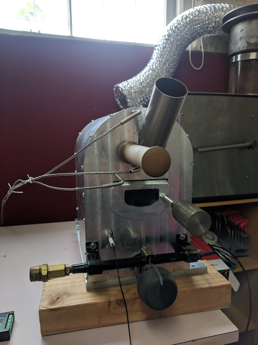
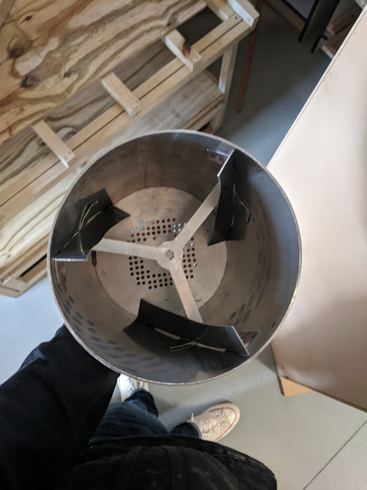
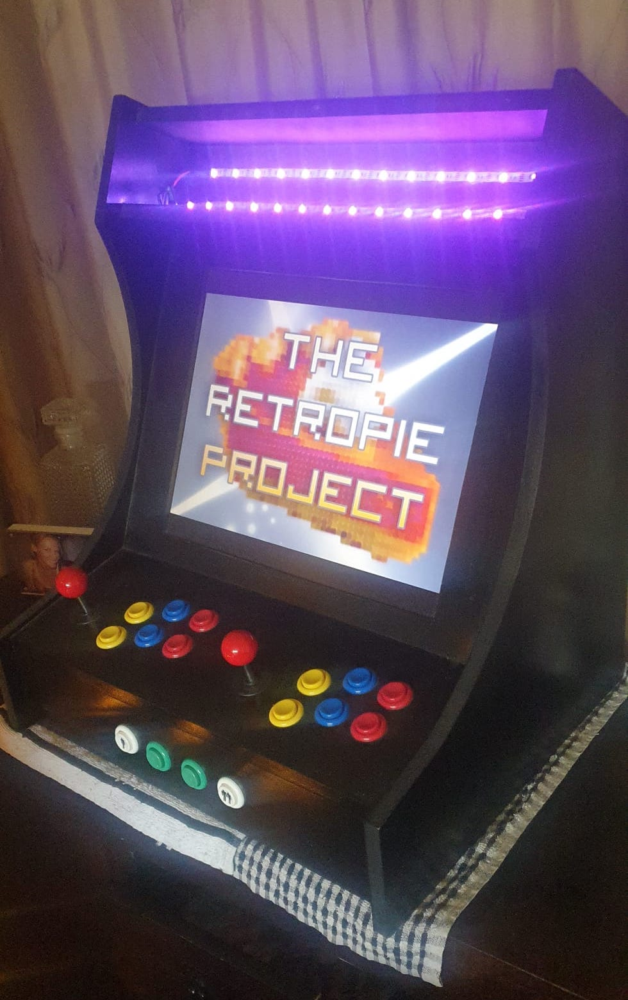
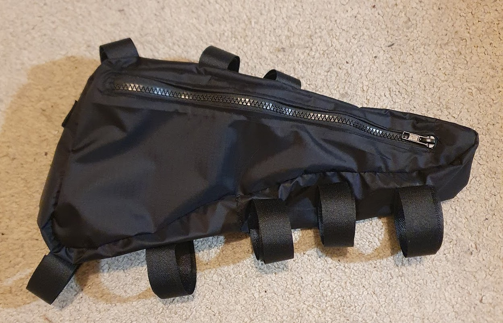
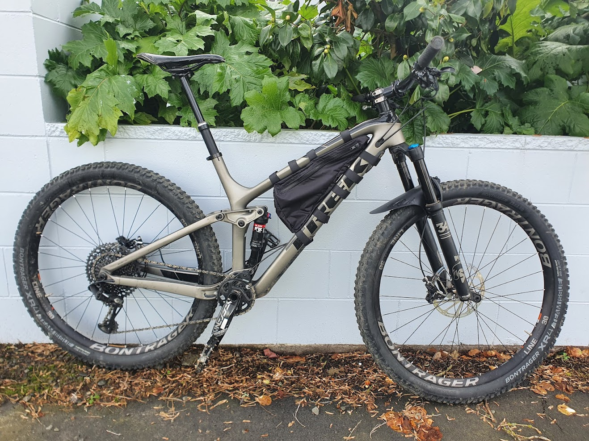
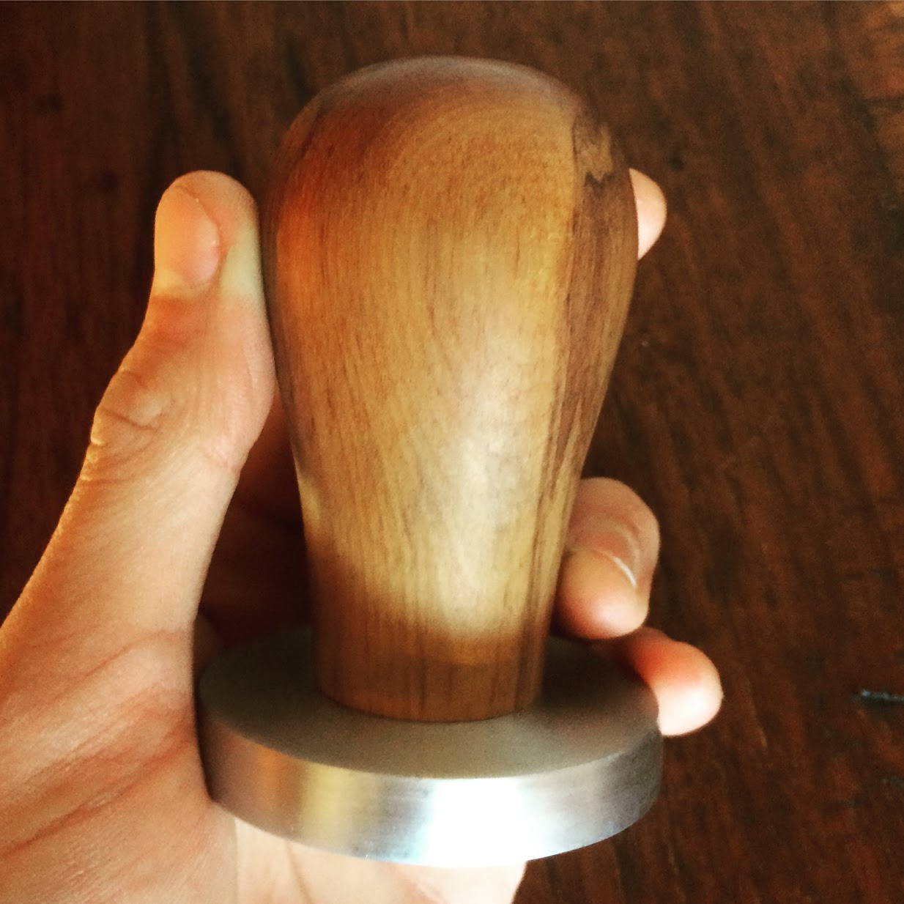

About
Projects
Photography
Food & Cooking
Contact
Warman Competition
My group and I designed and built a small robot from off-the-shelf components and 3D printed parts to compete against our university cohort in the Warman Competition. Our team placed fourth in our university competition, producing consistent scores in both competition runs.
We decided to create a robot that remained stationary in order to reduce the complexity and variability involved with moving designs. The design worked as follows:
- Laser cut carriers used carefully tensioned elastic to "slap" down on the balls and pick them up, driven by geared-down stepper motors to allow precise control of position.
- This deposited the balls onto our extension arms.
- Using a stationary design forced us to come up with a solution to extend an arm a large distance across the table in order to deposit the tennis balls in their requisite tubes. This was accomplished using aluminum extrusion and 3D printed sliders. A DC motor wound a spool that pulled tight a string running through pulleys on each segment of the arm, extending our arm to a consistent distance each time.
- A second string connected directly to a gate on the carrier would open the gate once it reached the desired distance, allowing the balls to roll into the tube.
 

Coffee Roaster
For my final high school project in my Structures class, I designed and built a coffee roaster with a 1kg capacity from majority repurposed material.
The roaster featured:
- Aluminium front and back plates.
- A stainless-steel drum with fins for mixing.
- A shawarma-style infrared LPG burner.
- Integrated thermocouples for monitoring bean-temp, environmental-temp, and max-environmental temp.
- Rimu handled bean “trier”.
- Front door with a glass insert for viewing.
During this project I spent a lot of time using a lathe, mill, and three-axis CNC mill along with other machinery required. I learned a lot during this project—given the chance to re-do it, I would take my learnings and apply a different approach.


Bartop Arcade Cabinet
Another project completed in my Structures class. I took the brief of “build a cupboard” with a grain of salt. This bar top arcade cabinet ran via a Raspberry Pi computer running emulation station software. The cabinet itself was designed in CAD, including slots for easy and precise fitting of the panels. Next, it was machined using a three-axis CNC router and then glued and screwed together.

Mountain Bike Frame Bag
Sewing is a pastime of mine, mostly involving repair, though I have tried my hand at a bit of pattern making. This custom-made frame bag was made for my Trek Fuel EX, taking measurements from the frame and creating a pattern to follow the contours and diameters of the frame tubing.
It featured:
- Waterproof material
- A full length side zipper
- Vecro straps to secure to frame


Rimu and Aluminium Coffee Tamper
This project was my introduction to using lathes for turning both metal and wood. The handle is made from rimu and attached to the aluminium base via 3 screws through the bottom. The aluminium base was machined to a diameter of 57mm and has a slight taper, beginning one third from the bottom to reduce suction while in use.
